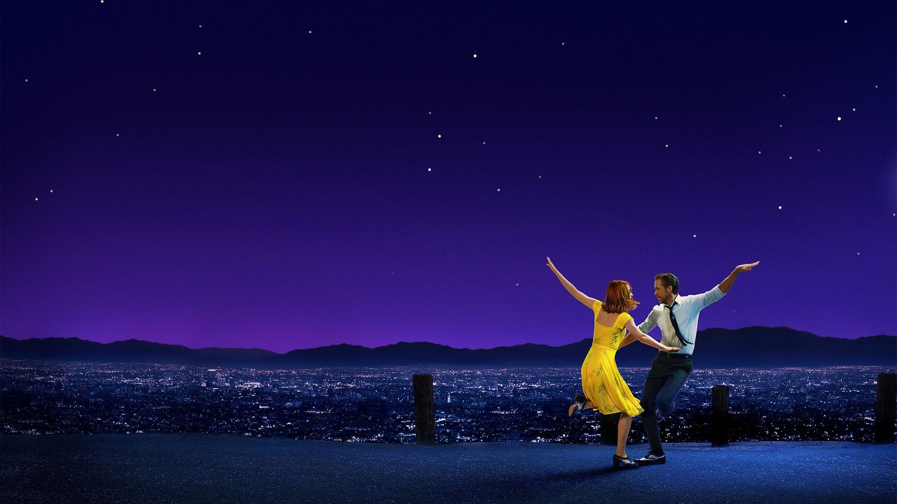

简介：
米娅渴望成为一名演员，但至今她仍旧只是片场咖啡厅里的一名平凡的咖啡师，尽管不停的参加着大大小小的试镜，但米娅收获的只有失败。某日，在一场派对之中，米娅邂逅了名为塞巴斯汀的男子，起初两人之间产生了小小的矛盾，但很快，米娅便被塞巴斯汀身上闪耀的才华以及他对爵士乐的纯粹追求所吸引，最终两人走到了一起。在塞巴斯汀的鼓励下，米娅辞掉了咖啡厅的工作，专心为自己写起了剧本，与此同时，塞巴斯汀为了获得一份稳定的收入，加入了一支流行爵士乐队，开始演奏自己并不喜欢的现代爵士乐，没想到一炮而红。随着时间的推移，努力追求梦想的两人，彼此之间的距离却越来越远，在理想和感情之间，他们必须做出选择。
电影链接：https://www.bilibili.com/bangumi/play/ss26783/?from=search&seid=16220931494298527773